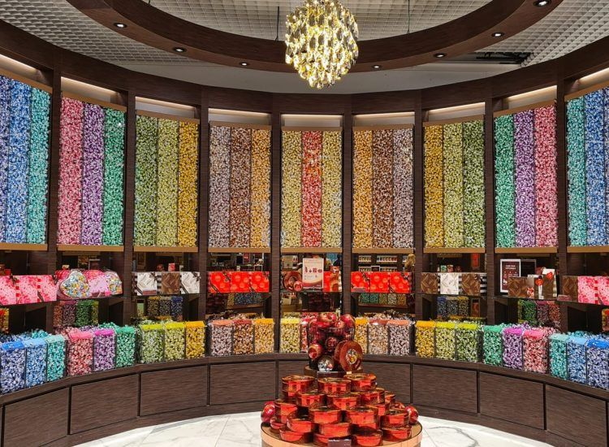
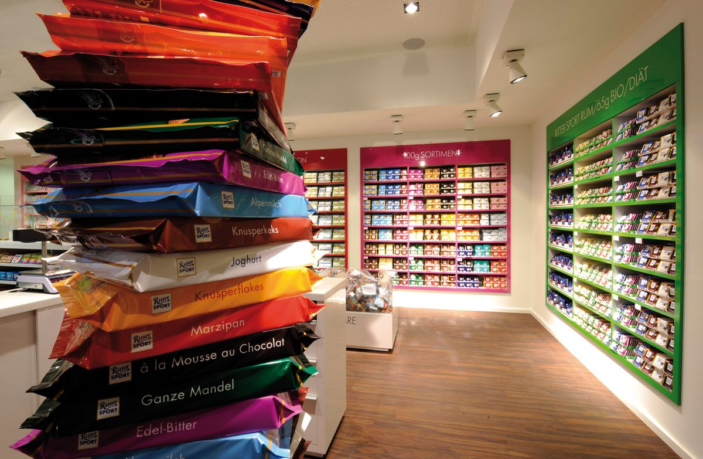

Los mejores sitios para los amantes del chocolate
- Museo Lindt del Hogar del Chocolate
-
Es de bien sabido que al hablar del chocolate de calidad siempre se acaba mencionando el chocolate suizo. Pues bien, qué mejor sitio para disfrutar de lo auténtico que el Museo Lindt del chocolate.

Foto de NewInZurich en Pinterest - Ritter Sport
-
¿Alguna vez has querido hacer tu propio chocolate? ¡Por fin llegó tu oportunidad! Desde Ritter Sport podrás convertirte en un cocinero dentro de su taller único e irrepetible.

Foto de rekaapanna en Pinterest